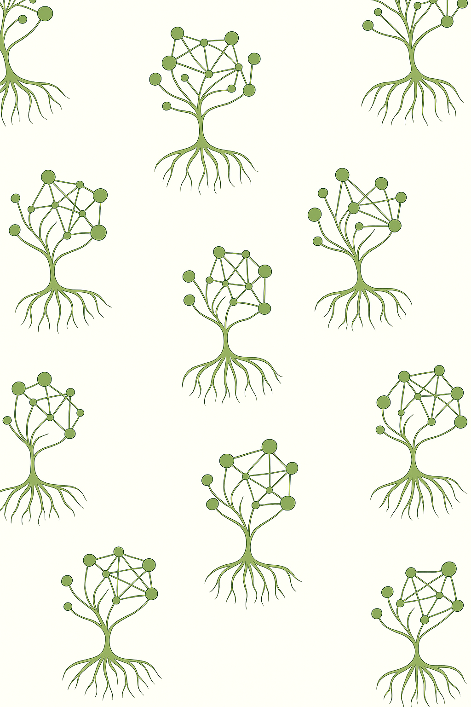

<section style="
  display:flex;
  align-items:center;
  gap:3rem;
  padding:3rem;
  font-family:sans-serif;
  max-width:900px;
  margin:auto;
  background-image: url('images/fondo_1.png');
  background-size: cover;
  background-position: center;
  background-repeat: no-repeat;
  border-radius:10px;
  color:white;
">
  <!-- Imagen circular grande -->
  

  <!-- Texto -->
  <div style="flex:1; text-shadow: 1px 1px 3px rgba(0,0,0,0.6);">
    <h2>About Me</h2>
    <p>
      I am an evolutionary biologist specializing in developing new AI methods to tackle complex evolutionary questions. 
      I also conduct empirical research, with experience ranging from microbial ecology to macroevolutionary patterns. 
      My multidisciplinary approach allows me to understand diverse biological problems and provide solutions with programming and computational tools.
    </p>
  </div>
</section>
